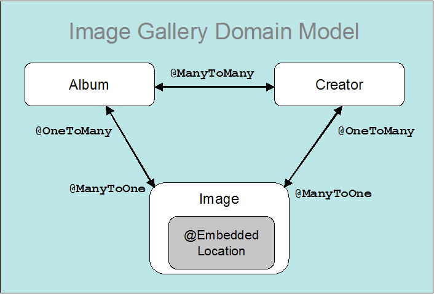

|
|
|
|
|
OpenJPA Bean Validation Primer¶A new feature defined by the JPA 2.0 specification is the ability to seamlessly integrate with a JSR-303 bean validation provider. With minimal effort, OpenJPA 2.0 can be coupled with a JSR-303 validation provider to provide runtime data validation. By combining these two technologies, you get a standardized persistence solution with the added ability to perform standardized java bean validation. What is Bean Validation?¶Most applications, especially those that gather input from a user, contain a significant amount of code to perform data validation. It is typically custom code, fragmented and littered throughout the application. Worse, there may be duplicate validation code at the presentation (Web) , business (EJB), and persistence layers. The task of keeping duplicate code in synch can be especially problematic. A slight modification in the code at one layer can lead to an unforseen breakage in another. The Bean Validation API was designed to provide a standardized method for validating data within Java beans. As an added feature, it seemlessly integrates with several JEE6 technologies including JPA 2.0 , JCA 1.6 , and JSF 2.0 . Additionally, JEE6 complaint servers are required to support bean validation and must include a validation provider. While a JEE6 environment provides some simplified packaging and configuration benefits, bean validation works equally well in a JSE environment. For simplicity, this primer will use a JSE environment, but the example code could be used within a JEE6 environment with very few modifications. While the JSR-303 specification is very feature rich and extensible, there are three core concepts that will be of most interest to the majority of users: constraints, constraint violation handling, and the validator itself. If you are running in an integrated environment like JPA, you will rarely have to concern yourself with the validator; simplifying things even further. Validation Constraints¶Constraints are a fundamental component of bean validation. Constraints can be placed on Java beans and/or fields and properties (collectively labeled attributes in JPA terminology) to constrain the data within the bean. A constraint can either be defined using annotations or XML. The bean validation specification defines a small set of constraints that must be included with every validation provider. This small set covers most types of simple validation in addition to a powerful regular expression based validator. If the built-in constraints don't fit the bill, you can very easily build your own custom validators and matching constraints. Let's start by looking at some simple constraints and then move to creating some custom constraints. Constraining an Entity¶For the purposes of an example, let's start building the JPA domain model for a digital image storage system. For the sake of simplicity, we'll start with a simple entity "Image". An Image has an ID, image type, file name, and image data. Our system has a requirement that the image type must be specified and the image file name must include a valid JPEG or GIF extension. The code below shows the annotated Image entity with some built-in bean validation constraints applied. The Image class uses two built in constraints @NotNull and @Pattern. The @NotNull constraint ensures that an ImageType is specified and @Pattern constraint uses regular expression pattern matching to ensure the image file name is suffixed with a supported image format. Each constraint has corresponding validation logic that gets executed at runtime when the Image entity is validated. If either constraint is not met, the JPA provider will throw a ConstraintViolationException with the defined message. The JSR-303 specification also makes provisions for the use of a variable within the message attribute. The variable references a keyed message in a resource bundle. That allows for environment specific messages and localization of messages. See the JSR-303 specification , section 4.1.3 for additional details regarding the customization and localization of messages. Custom Constraints and Validators¶If the built-in constraints do not meet your needs, you can create your own custom validators and constraints. In our previous example, the Image entity used the @Pattern constraint to validate the file name of the image. However, it did no constraint checking on the actual image data itself. A pattern-based constraint could potentially be used, but this is rather inflexible and will get messy. A custom constraint and validator provides a more robust and flexible solution. First, let's create a custom method level constraint annotation named ImageContent. Now, let's create the validator class, ImageContentValidator . The logic within this validator gets executed by validation provider when the constraint is validated. Notice, the validator class is bound to the constraint annotation via the validatedBy attribute on the @Constraint annotation. Finally, let's apply the new constraint to the getData() method on our Image class. When validation of the "data" attribute occurs, the isValid() method in our ImageContentValidator will fire. This method contains logic for performing simple validation of the format of the binary image data. A potentially overlooked feature in the ImageContentValidator is that it can also validate for a specific image type. By definition, it accepts for JPEG or GIF formats, but it can also validate for a specific format. For example, by changing the annotation to: instructs the validator to only permit image data with valid JPEG content. Type-level Constraints¶The examples thus far have shown the use of validation constraints on individual attributes. That is sufficient in many cases, but validation logic often needs to consider combinations of attributes when validating an entity. For example, the constraints applied to the Image entity validate that an image type is set (not null), the extension on the image file name are of a supported type, and the data format is correct for the indicated type. But, for example, it will not collectively validate that a file named "img0.gif" is of type GIF and the format of the data is for a valid GIF image. There are several options to provide collective validation. One option is to create subclasses of Image, JPEGImage and GIFImage, with constraints geared for each of these types. Another, less invasive and simpler option is a type-level constraint. Let's modify our Image class to use a custom type-level constraint. Here is the updated Image entity with the new type-level constraint. Notice that the @Pattern and @ImageContent were replaced by @NotNull constraints. The new class level constraint will perform the duties previously performed by @Pattern and @ImageContent. The @NotNull constraints have been added as a first level check. If these constraints succeed, the type level validator @ImageConstraint will fire, providing complex validation. Sequenced validation is provided using validation groups and group sequences. These concepts will be explained shortly. Here is the code for the new ImageConstraint annotation: Unlike the ImageContent constraint, ImageConstraint is targeted for a TYPE. This allows this annotation to be applied at a type level (class or interface). This constraint has a new validator class, ImageValidator . One thing that must be considered in a JPA environment is the load state of the attributes of an entity when doing type-level validation. Simply accessing attributes can have some side effects. If the attribute is marked LAZY fetch it may get loaded in order to perform validation. If the attribute is not loaded and cannot be loaded (for several reasons, most likely due to detachment) you'll be validating inconsistent data. The JPA 2.0 specification provides a utility interface to help in these situations. It can be obtained statically so squirreling away a copy of the JPA entity manager is not necessary. Here is an example of how PersistenceUtil could be used in the ImageValidator. The Complete Domain Model¶Now that some of the basics of bean validation are covered, let's finish up the domain model for our simple application and then get into JPA specifics through an example.  The persistent types Album , Creator , and Location are new to the domain model. An Album entity contains a reference to collection of its Image entities. The Creator entity contains a reference to the Album album entities the image Creator contributed to and a reference to the Image entities they've created. This provides full navigational capabilities to and from each of the entities in the domain. An embeddable, Location, has been added to Image to allow location information to be stored along with the Image. The Album and Creator entities have a few built-in constraints and are pretty run of the mill. The embeddable Location is a bit more interesting in that it demonstrates the use of the @Valid annotation to validate embedded objects. In order to embed location into an image a new field and corresponding persistent properties were added to the Image class: Notice the use of the @Valid annotation. This provides chained validation of embeddables within a JPA environment. Thus, when Image is validated, any constraints on the Location it references are also validated. If @Valid was not specified, Location would not get validated. In a JPA environment, chained validation via @Valid is only available for embeddables. Referenced entities and collections of entities are validated separately in order to prevent circular validation. Validation Groups¶Bean validation uses validation groups to determine what and when validation occurs. There are no special interfaces to implement or annotations to apply in order to create a validation group. A validation group is denoted simply by a class definition. However, it is strongly recommended that simple interfaces are used. This is a best practice since it makes validation groups more usable in multiple environments. Whereas, if a class or entity definition were used as a validation group, it may pollute the object model of another application by bringing in domain classes and logic that do not make sense for the application. By default, if a validation group or multiple groups is not specified on an individual constraint, it will be validated using the javax.validation.groups.Default group. Creating a custom group is as simple as creating a new interface definition. This new ImageGroup validation group can now be applied to a constraint. This @ImageContent constraint in this example will validate when either or both the Default and/or ImageGroup group is/are validated. By default there is no order applied or short circuiting behavior when validation occurs. Validation ordering and short circuiting is an extremely useful function that can be achieved by defining a group sequence. A group sequence is defined via the @GroupSequence annotation with an ordered array of validation groups. When the group sequence is validated, the constraints supplied in its grouping are validated in the order they are specified. In addition, if a constraint within a group fails, the groups that follow will not be validated. This allows lightweight validation such as @NotNull or @Size constraints to validate before heavyweight constraints. The Image class uses a group sequence to validate its lightweight @NotNull constraints (which use the Default validation group) before validating its heavyweight constraint @ImageValidator (which validates when the ImageGroup) is validated. Sequenced validation can be accomplished by defining a new validation group. This group is then specified during validation. How to specify which groups will be validated in a JPA environment is explained in the sections to follow. JPA Integration¶The JPA 2.0 specification makes integration with JSR-303 very simple. In a JSE environment all you need to do is provide the JSR-303 API and a JSR-303 bean validation provider on your runtime classpath and bean validation is enabled by default. OpenJPA adds one additional caveat. With OpenJPA you must also be using a version 2.0 persistence.xml file. A version 1.0 persistence.xml provides no means to configure bean validation. Requiring a version 2.0 persistence.xml prevents a pure JPA 1.0 application from incurring the validation startup and runtime costs. This is important given that there is no standard means for a 1.0-based application to disable validation. Besides adding the necessary bean validation jars to your classpath, enabling validation in an existing 1.0 application may be as simple as modifying the root element of your persistence.xml to:
Validation Modes¶Bean validation provides three modes of operation within the JPA environment: auto, callback, and none. As you may have guessed, none disables bean validation for a particular persistence unit. The auto mode, which is the default, enables bean validation if a validation provider is available within the classpath. When callback mode is specified, a bean validation provider must be available for use by the JPA provider. If not, the JPA provider will throw an exception upon instantiation of a new JPA entity manager factory. While auto mode simplifies deployment, it can lead to problems if validation is unexpectedly not taking place due to a configuration problem. It is a good practice to use either none or callback mode explicitly in order to get consistent behavior. In addition, if none is specified, OpenJPA will do optimization at startup and will not attempt to perform unexpected validation. Explicitly disabling validation is especially important in a JEE6 environment where the container is mandated to provide a validation provider. Thus, unless specified, a JPA 2.0 app running in a container will have validation enabled. This will add additional processing during lifecycle events. We'll get to lifecycle events shortly. There are two means to configure validation modes in JPA 2.0. Perhaps the simplest is to add a validation-mode element to your persistence.xml with the desired validation mode. In addition, the validation mode can be configured programmatically by specifying the javax.persistence.validation.mode property with value auto, callback, or none when creating a new JPA entity manager factory. Validation in JPA¶We've covered the basics of constraints and validation configuration, now on to actually doing some validation within JPA. Bean validation within JPA occurs during JPA's lifecycle event processing. If enabled, validation will occur at the final stage of the PrePersist, PreUpdate, and PreRemove lifecycle events. Validation will occur only after all user defined lifecycle events, since some of those events may modify the entity that is being validated. By default, JPA enables validation for the Default validation group for PrePersist and PreUpdate lifecycle events. If you need to validate other Validation groups or enable validation for the PreRemove event you can specify the validation groups to validate for each lifecycle event in the persistence.xml . Now that we've gone through validation basics and JPA configuration options, the validation part is a piece of cake. In general, you simply need to handle validation exceptions that may result from various JPA operations. Here are some simple examples for the persist, update, and remove operations. We'll get to more in-depth exception handling in a moment. Exception Handling¶If one or more constraints fail to validate during a lifecycle event, a ConstraintViolationException is thrown by the JPA provider. The ConstraintViolationException thrown by the JPA provider includes the set of ConstraintViolations that occurred. Individual constraint violations contain information regarding the constraint, including a message, the root bean (JPA entity), the leaf bean (useful when validating JPA embeddables), the attribute which failed to validate, and the value that caused the failure. Here is a sample exception handling routine: Constraint violation processing is not quite as straight forward when using type-level level validators with type-level constraints as using attribute level constraints. When type-level constraints are used it can be more difficult to determine which attribute or combination of attributes failed to validate. In addition, the entire object is returned as the invalid value instead of an individual attribute. In cases where specific failure information is required, either use an attribute level constraint or a custom constraint violation may be provided as described in section 2.4 of the JSR-303 specification . OpenJPA and Apache Bean Validation Libraries¶If you are not using a maven build environment, the use of bean validation in a JPA environment requires a 2.0 level JPA provider and a bean validation provider libraries. Apache OpenJPA 2.0 includes a test suite which exercises the Apache Bean Validation provider and this has proven to be a very stable environment. Here are the libraries you'll need.
Maven Configuration¶If you are a maven user, dependency management is much simpler. Here are the dependencies you'll need in order to use OpenJPA 2.0 and the current (as of this writing) snapshot of Apache Bean Validation. Getting the Sample Application¶The code for the example provided in this primer is currently available from the OpenJPA subversion repository. Obtaining, building and running the example requires Subversion , Maven version 2.2.1 or later and JDK version 1.6. Be sure to set your JAVA_HOME environment variable to the location of the 1.6 JDK. To get and run the sample you must first get the source for OpenJPA via: svn co http://svn.apache.org/repos/asf/openjpa/trunk Next, from the trunk directory, run a quick build to generate the OpenJPA provider jars. mvn -Dtest install -DfailIfNoTests=false -Dmaven.test.skip=true Running the Sample Application¶Currently, the sample only runs a jUnit which shows how bean validation can be used within the context of JPA persist, update, and remove operations. To build and run the sample using maven:
This command builds the image-gallery sample, enhances the entity classes, and runs the jUnits. Within the Maven output, you should see output similar to the following. Importing the Sample into Eclipse¶If you'd like to import the sample into Eclipse, from the image-gallery directory run: mvn eclipse:eclipse This will generate the necessary Eclipse project files. Next, direct Eclipse to import a project from this directory. You'll need to set the M2_REPO path variable to point at the location of your local Maven repository in order to get the project to build. References¶ |